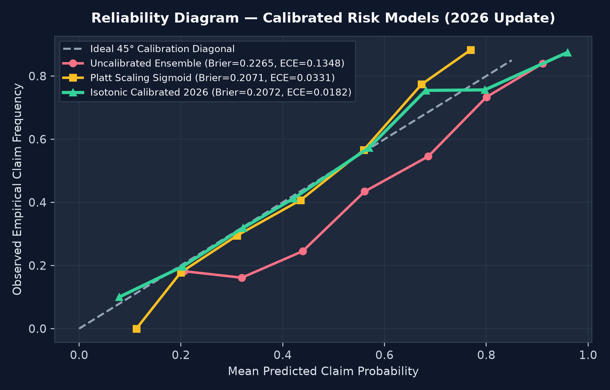
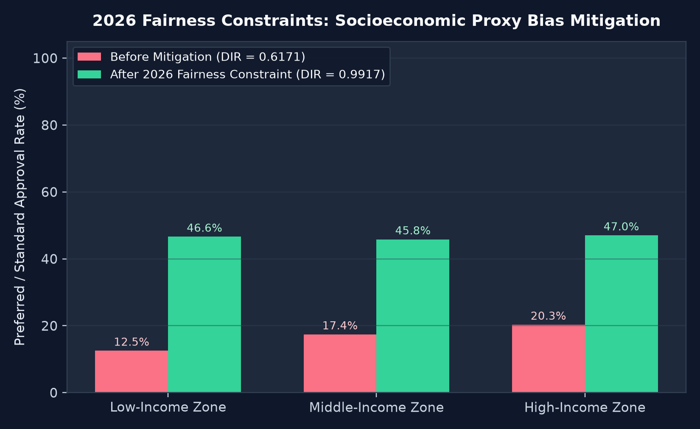
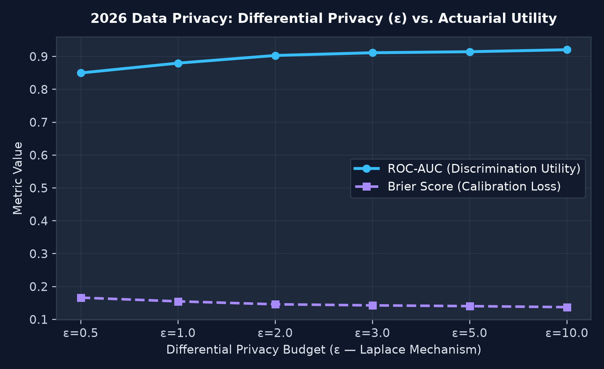
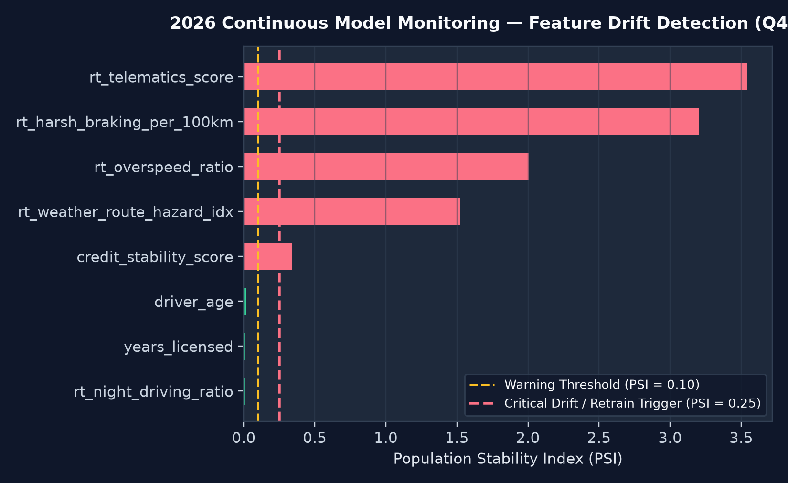
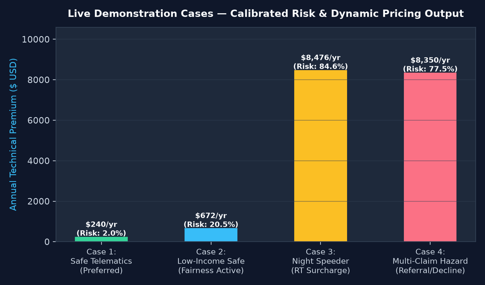

Using historical policy data and real-time IoT telematics streams to improve insurance pricing, automated underwriting, and portfolio loss forecasting — enhanced with Calibrated Risk Models, Model Drift Monitoring, Data Privacy, and Fairness Constraints.

Uncalibrated cost-sensitive ensembles systematically overestimate claim probability, inflating customer premiums. We apply 5-fold cross-validated Isotonic Regression Calibration:

Historical credit stability scores carry socioeconomic proxy bias against Low-Income Zone applicants. Our two-stage fairness constraint applies Kamiran-Calders sample weights during training and group parity calibration at inference:


Monitors every feature using the Population Stability Index (PSI) and two-sample Kolmogorov-Smirnov (KS) tests:

python app.py and open http://127.0.0.1:5000.git init git add . git commit -m "Statement #31: Predictive Underwriting (2026 Update)" git branch -M main git remote add origin https://github.com/YOUR_USERNAME/predictive-underwriting-2026.git git push -u origin main